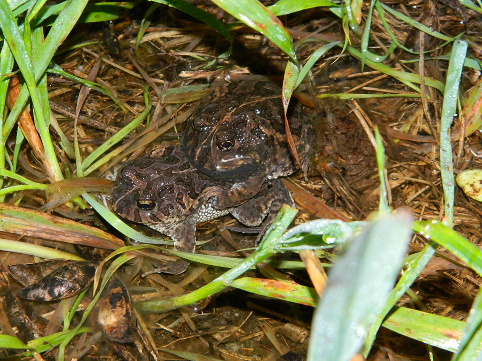
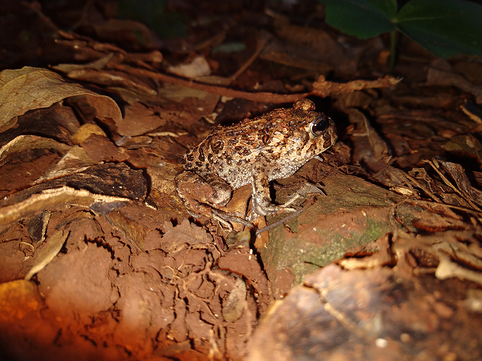

Aparência mais próxima a um sapo, tem a pele mais seca, com verrugas e glândulas, a cabeça larga e o focinho curto. As costas são castanho-escuro, amareladas ou bege. Uma linha amarela vai do começo do focinho, pelas costas, até o fim do corpo. Habita áreas abertas no sul e sudeste do Brasil além do Uruguai, Argentina, Paraguai e Bolívia. Abriga-se em covas escavadas no solo. Surgem em maior número para se reproduzir após grandes chuvas e vocaliza em lagoas rasas e temporárias onde os ovos são colocados, junto ao fundo de lodo. Não possui veneno.
 